This is a scheduling paper, not a kernel paper: not one weight is changed. It starts from a measurement that contradicts the usual advice — on PCIe-class hardware, pipeline parallelism serves fewer requests per second than tensor parallelism, but not because it wastes bandwidth. It wastes time, and the waste has three distinct shapes. Prefill-Prefill imbalance comes from prompts of unequal length sharing a batch; Prefill-Decode imbalance comes from one microbatch being all decode while its peer is all prefill; Decode-Decode imbalance comes from decode-only iterations whose microbatches hold unequal numbers of requests. Each shape has a different actuator, so the paper builds two: a per-iteration chunk size chosen either by a greedy feedback loop or by a small latency model, and a delay-scheduling policy that suspends and resumes decode requests to even out microbatches across stages. On Qwen2.5-32B and 14B over four A100 40GB GPUs the result is staged — a well-chosen static chunk already puts PP ahead of TP on goodput, and the dynamic variants then buy latency and tail behaviour on top.
The testbed is a single server — four NVIDIA A100 40GB GPUs attached to the host over PCIe 4.0, a 128-core AMD EPYC 9754 at 2.25 GHz, 768 GB of RAM — running SGLang 0.4.1 with PyTorch v2.5.1, CUDA 12.4 and FlashInfer. Two BF16 models (Qwen2.5-32B and 14B) meet three real traces (Azure Conversation, ShareGPT, CNN), one decode-heavy derivative (CNN-Reversed, built by swapping CNN's input and output distributions) and two synthetic extremes. The budgets are the MLPerf inference defaults: 2,000 ms for TTFT and 200 ms for TPOT.
LLM inference runs in two phases. In prefill the prompt tokens go through every decoder layer once, which initialises the attention key-value (KV) cache and produces the first output token. In decode the model generates one token at a time, reusing that cache, so each step attends only to the new token (Vaswani et al., 2017). Per-token cost in decode is therefore near-constant and far below prefill's, and the number of decode steps is simply the output length. An iteration of an online server is thus not one request but a mixed batch, and its cost is dominated by whichever phase happens to be in it.
Modern servers schedule at iteration granularity: requests join an in-flight batch when resources allow and leave as soon as they finish, instead of waiting for a whole batch to drain (ORCA, Yu et al., 2022; vLLM, Kwon et al., 2023). This is what makes continuous batching work, and it is also what creates the paper's problem — requests in different phases coexist inside one iteration, so a long prompt admitted next to a set of decodes inflates the decode latency of everything in the batch. Chunked prefill (Sarathi-Serve, Agrawal et al., 2024) is the standard answer: cut the prompt into fixed-size chunks so a long prefill is spread over several iterations instead of dominating one. It is now routine in vLLM (Kwon et al., 2023), SGLang (Zheng et al., 2024) and Dynamo (NVIDIA AI Dynamo Team, 2024) — the substrates this paper builds on.
TP shards the intra-layer tensors: attention projections and feed-forward weight matrices are split across devices, each GPU computes partial GEMMs and partial attention on its shard, and the partial outputs are combined with collectives such as all-reduce so the layer keeps its logical semantics. Every GPU holds a shard of every layer, so every forward pass touches every device. That gives low per-token latency when the interconnect is NVLink, which hides the frequent all-reduce (Shoeybi et al., 2020), and it is why TP became the default for latency-sensitive single-node serving.
PP partitions by depth instead: contiguous sets of layers — stages — go to different GPUs, and a microbatch (a smaller split of the iteration's batch) walks the stages in order (GPipe, Huang et al., 2019; PipeDream, Narayanan et al., 2019). While stage 0 processes microbatch i+1, stage 1 can process microbatch i, so latency hides behind pipelining and the communication volume is a fraction of TP's. What PP buys in bandwidth it pays in shape: a stage cannot run faster than its slowest peer in the same step, so any difference in per-stage work becomes idle time — a pipeline bubble.
| Dimension | Tensor parallelism (TP) | Pipeline parallelism (PP) |
|---|---|---|
| What is split | Intra-layer tensors: attention projections and feed-forward weight matrices | Layer depth: contiguous sets of layers, one stage per GPU |
| Communication pattern | All-reduce per layer; every GPU joins every forward pass | Point-to-point activation handoff between neighbouring stages |
| Communication volume | Large: needs NVLink-class bandwidth to stay hidden | Small: tolerable over PCIe and weaker interconnects |
| Load balance | Automatic: every GPU runs the same operator set | Dependent on batch composition; unequal stages mean idle time |
| Dominant risk | Communication becomes the bottleneck once bandwidth is short | Pipeline bubbles; high scheduling complexity, immature framework support |
| The paper's stance | Still the pragmatic choice on NVLink clusters | Worth revisiting on bandwidth-constrained machines, provided the bubbles are attacked |
The paper is explicit about why PP nonetheless lost. NVLink exists only on a limited set of platforms, such as DGX systems with A100 or H100 GPUs, while many GPU servers in public clouds still rely on PCIe, which offers lower bandwidth — the same constraint applies to AMD GPUs and NPUs. In those settings PP should win on communication, and yet TP is preferred for a second, less technical reason: TP is generally simpler to implement and integrate, avoiding the scheduling complexity and microbatching challenges inherent in PP. The consequence the authors point at is that modern serving frameworks remain relatively immature in their support for efficient PP — which is the gap this paper occupies.
TTFT is the latency of the prefill path and TPOT the inter-token latency of the decode path; MLPerf Inference (2024) uses 2,000 ms and 200 ms as typical targets, and the paper adopts both. Over them sits goodput, defined in §5.1 as the highest request rate at which both the 90th-percentile TTFT and the 90th-percentile TPOT satisfy their SLO. That definition matters for reading every result that follows: a configuration is not "good" because its mean is low, but because its P90 stays inside budget while the arrival rate climbs. The paper optimises goodput first and only then compares P90 latency, which is why several figures show flat goodput but very different tails.
The opening measurement is a head-to-head on the target platform — four A100 GPUs on PCIe 4.0, Qwen2.5-32B, SGLang, the Azure Conversation trace, request rate swept from 1 to 8 requests per second. The top panel is P90 TTFT, the bottom panel is P90 TPOT, and the vertical dotted lines mark the highest request rate that still satisfies both budgets.
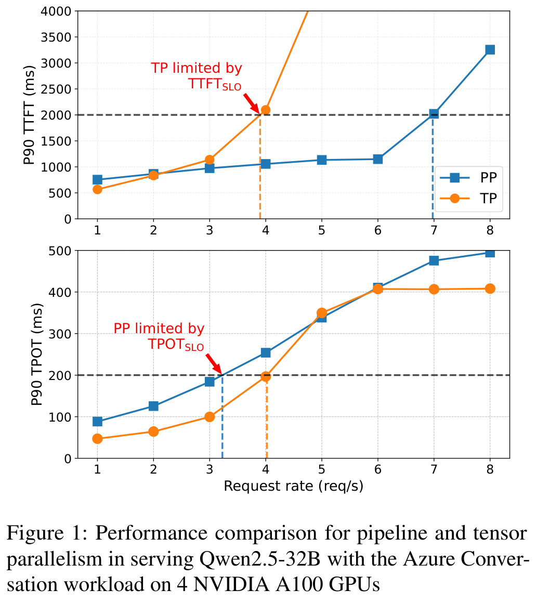
💡 Click any image to open the original high-resolution version; click again or press Esc to close.
That is precisely the gap the paper attacks. If PP's TPOT penalty came from arithmetic or bandwidth it would be structural; if it comes from how work is distributed across stages in time, it is a scheduling problem with schedulable knobs. Everything after this figure is an argument for the second reading — and, importantly, a measurement of how much of the penalty each knob actually removes.
The root cause of pipeline bubbles is computational imbalance between pipeline stages — between GPU workers. In training the inputs are fixed and predictable, so stages can be balanced once. Online serving is the opposite: arrival times and batch composition vary continuously, which makes balanced compute across stages hard to maintain even when every stage runs the same code on the same model. The paper's contribution in this section is to stop treating that imbalance as one phenomenon and split it into three, because each has a different cause and therefore a different fix.
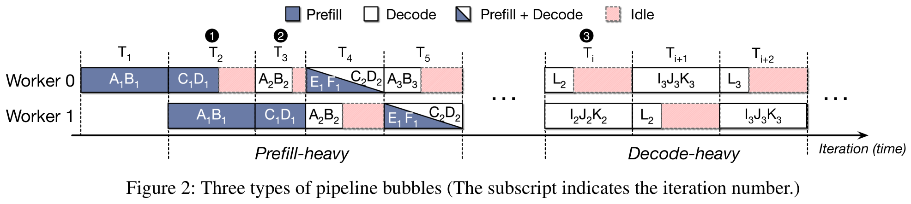
The paper then measures the two phase types separately. Prefill latency depends largely on the input sequence length (Figure 3a), which is why balancing compute density of prefill across workers is the whole game: when two prefills of 2,048 and 128 tokens are issued back to back, the resulting P-P imbalance leaves a bubble of around 627 ms that stalls every subsequent stage. Decode behaves differently — with one token per request per step, the batch size becomes the dominant factor (Figure 3b) — but the underlying cost curve is not smooth, because the linear layers that dominate decode execute as a function of token count in a step pattern (Figure 3c). The gap between batch sizes 96 and 128 is a relatively minor 5%; between 128 and 160 it widens to 31%. Going from 128 to 129 requests can therefore abruptly trigger about 31% idle time, and the practical corollary is blunt: configure decode-only microbatches in multiples of 128 to align with the preferred efficiency of the underlying compute kernels.
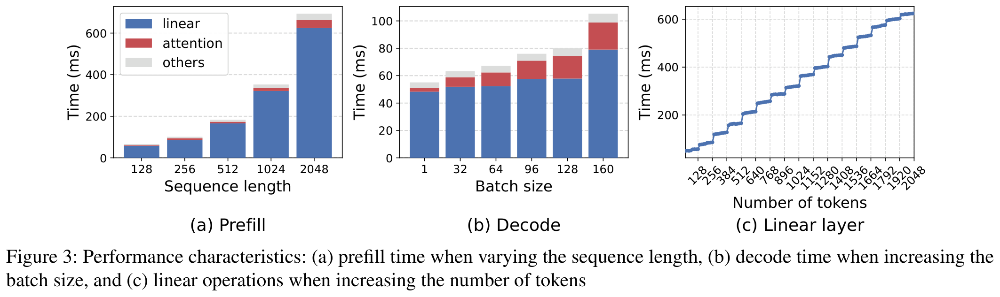
Chunked prefill bounds the prefill work per iteration, which attacks P-P and P-D directly — but the bound itself is a trade-off. Figure 4a measures bubble time against request rate for two fixed chunk sizes on the Azure Code workload with the 32B model. At a chunk of 128 the bubbles stay small across the whole range; at 2,048 a handful of long prefill microbatches dominate the pipeline at low to moderate load (1–3 req/s), and the bubble only collapses once the request rate passes roughly 4 req/s and the pipeline is consistently filled with prefills — above 5 req/s bubbles are rare for either size because every stage is kept busy by the sheer number of tokens. Figure 4b shows the other side of the trade-off: token throughput rises monotonically with the chunk size, from about 6.8k tok/s at 128 to about 11.3k tok/s at 2,048 (values read off the figure). Fewer tokens per iteration means lower GPU utilisation, which shows up as TTFT growth exactly when the queue is longest.
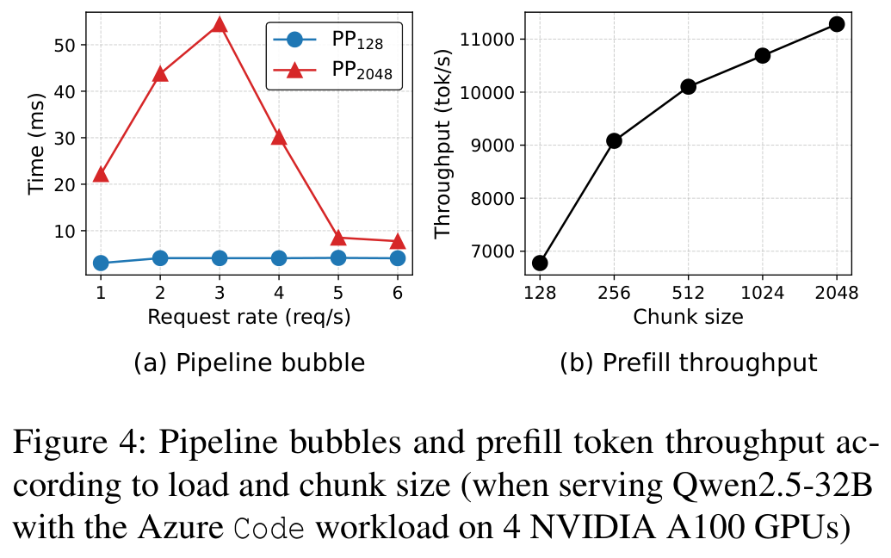
The mechanism is easiest to see on a timeline. In naive PP, A1's prefill occupies Worker 0 for one long block, Worker 1 waits for the whole block, and the idle strip after it is unavoidable. With chunked prefill, A1 is split into A1[C1] and A1[C2]: stage 0 hands over the first chunk and can start B1 while stage 1 is still working on A1[C1], so the pipeline fills earlier and the same work finishes with less idle time.
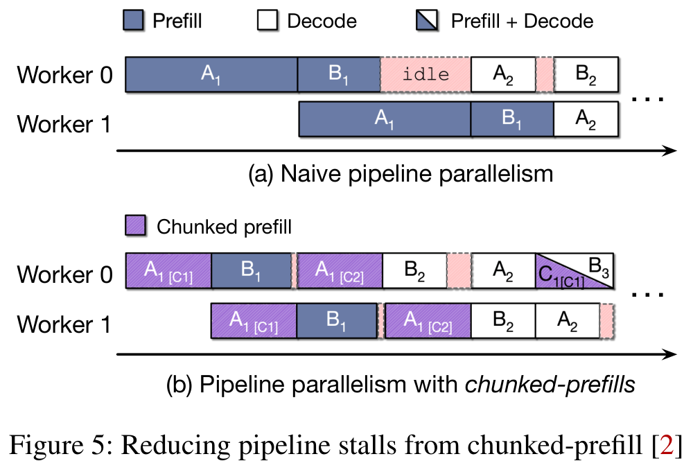
| Imbalance | Trigger | Symptom | Lever in this paper |
|---|---|---|---|
| P-P (prefill-prefill) | Microbatch input lengths within one iteration differ sharply (e.g. 2,048 vs 128 tokens) | The long prefill occupies one stage while the short one idles; a single bubble reaches about 627 ms | Dynamic chunk size — cutting long prefills so per-stage work evens out |
| P-D (prefill-decode) | One microbatch is all decode while another is all or mostly prefill | Per-stage work differs by an order of magnitude; the decode side idles and TPOT climbs | Dynamic chunk plus the predictor's bounds, which stop a large prefill from entering a decode iteration |
| D-D (decode-decode) | An all-decode iteration in which one microbatch holds noticeably more requests (e.g. 129 vs 128) | Linear layers are a step function, so a few extra requests cost about 31% more; the stall repeats every iteration | Delay scheduling — migrate requests between microbatches and align to 128-sized hardware boundaries |
Both mechanisms answer the same question at every scheduling iteration: how many tokens may this iteration prefill? The stated goal is to pick the smallest chunk size that can still absorb the current request load, because small chunks minimise the prefill-induced bubble, while a growing queue forces the chunk up to keep utilisation high. The two SLOs act as the constraints that bound that search from opposite sides. TPOTSLO caps the chunk: as demand rises the system enlarges the chunk, but strictly limits the increase so that no TPOT violation is anticipated. TTFTSLO acts as the load indicator: when the waiting queue grows, incoming requests are likely to miss their TTFT budget, so the chunk is enlarged to drain the queue faster; when TTFT is comfortable the system is lightly loaded and the chunk can be reduced, which costs little throughput because the system is not compute-saturated. Together the two SLOs define the feasible range of chunk sizes — the paper's framing, and the reason both the greedy and the predictive variant can be described as "pick a point inside the SLO-derived interval".
Algorithm 1 keeps a current chunk size \(c\) inside a discrete candidate set \(C\) (for example {128, 256, …}), initialised to the minimum, and updates it every \(D_p\) scheduling iterations — the cadence is forced by the hardware, since a chunk-size change only takes effect after a microbatch has traversed all \(D_p\) stages. Five quantities steer the update: the available KV-cache ratio \(KV_{free}\in[0,1]\), the KV watermark \(\theta_{mem}\), two boundaries α and β for TTFT slack, and one boundary γ for TPOT slack. The loop then walks four branches in strict priority order.
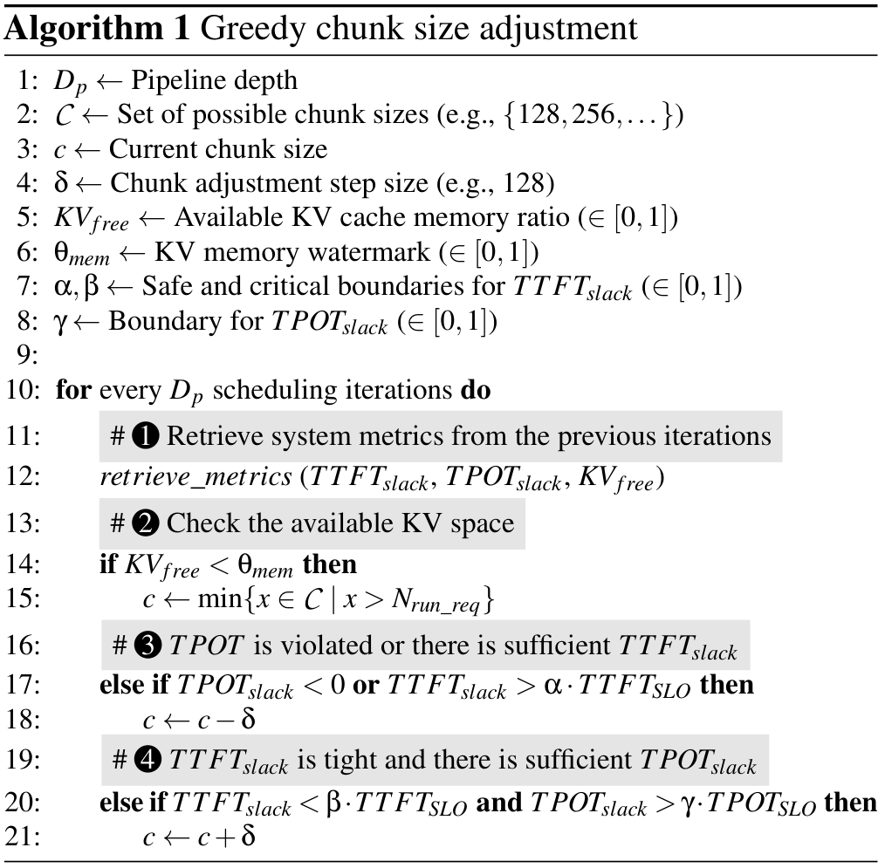
The ordering is the design. The memory check pre-empts the latency logic because a failed KV allocation is not a slow iteration but a dropped one; the shrink branch is evaluated before the grow branch because over-large chunks are the failure mode the paper set out to remove; and both α and β are expressed as fractions of the SLO, which is what makes the loop portable across SLO settings instead of hard-coded to 2,000 ms and 200 ms.
Its limits are structural, and the paper states them rather than hiding them. Because the adjustment is step-wise and reactive, the loop needs several iterations to converge on the right chunk size, so under rapidly changing workloads the scheduler is permanently chasing a moving target and spends long stretches in a suboptimal state. And because the only evidence it sees is the TTFT/TPOT slack measured in previous iterations, that evidence is delayed by the pipeline depth and skewed by whatever larger chunks are still executing in other stages — under pipeline parallelism the feedback is both late and polluted.
The second mechanism replaces reaction with estimation. The latency model — the paper calls it ALP, adaptive latency prediction — is deliberately split along the same line Figure 3 draws. Iteration latency is dominated by linear layers, whose cost scales with the total number of batched tokens and is therefore largely determined by the chunk size; that makes the linear part predictable by offline profiling, a straight line through token counts. Attention is a smaller but dynamic share, tied to request composition, and because inference is autoregressive the batch composition evolves gradually across iterations — gradual enough to be tracked online without making the prediction unstable.
Each term in the online component has a concrete referent in chunked prefill: \(L_{past}\) is the context accumulated from earlier chunks, \(L_{pre}\) the current prefill chunk, and \(L_{dec}\) the context lengths of the decode requests in the batch. Their products give the three attention shapes the iteration actually pays for — prefill attention over the past context (\(L_{past}\cdot L_{pre}\)), self-attention inside the current chunk (\(L_{pre}^{2}\)), and decode attention (\(L_{dec}\)) — with coefficients \(\beta_0,\beta_1,\beta_2\) and a residual ε for unmodelled system noise. The offline part is measured once, across discrete token counts from 128 to 2,048.
The coefficients are not fitted offline. Each iteration the scheduler compares the prediction with the measured latency and updates the parameters with Recursive Least Squares (Haykin, Adaptive Filter Theory). The paper gives two reasons RLS fits this problem specifically: unlike gradient descent, whose updates are sensitive to the scale of input features, RLS carries an internal covariance matrix that adapts to feature-wise scaling, which matters because \(L_{pre}^{2}\) and \(L_{dec}\) differ in magnitude by orders of magnitude; and a forgetting factor lets recent observations dominate, so the model tracks dynamic effects such as prefill-decode interference rather than averaging them away.
With a calibrated model the scheduler can price every candidate before committing to one. It reads the current state, updates the predictor with the previous iteration's measurement, throws out candidates whose predicted latency would break TPOTSLO, throws out candidates whose predicted throughput is too low to meet TTFTSLO, and then takes the cheapest candidate that survives both filters.
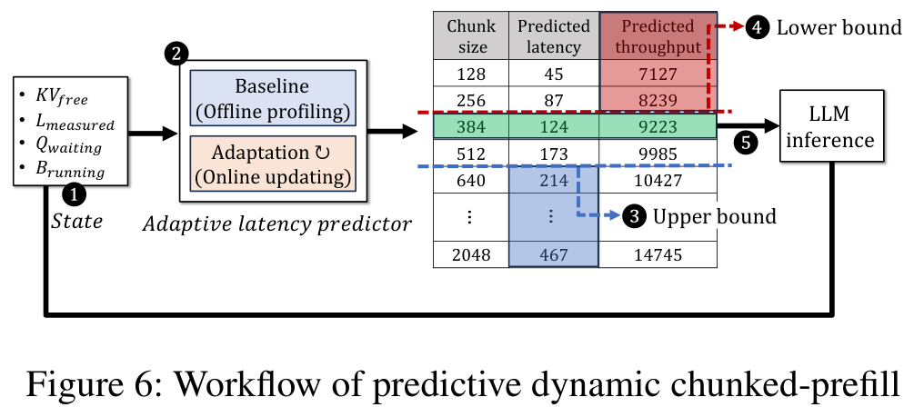
Two details are easy to miss and matter for a re-implementation. First, the memory safety check is identical to the greedy algorithm's — the predictive path does not get to skip the branch that prevents a stage from failing its KV allocation. Second, when no candidate satisfies both SLOs, the system is treated as overloaded and the scheduler deliberately switches objective: it takes the largest chunk that still satisfies TPOTSLO, because at that point the priority is draining the waiting queue rather than minimising bubbles. The lower bound itself has two parts — an arrival-matching throughput computed from the request rate and token distribution over a sliding window, plus a component for requests that have already waited longer than a freshness threshold, obtained by dividing their total prompt length by their remaining budget (TTFTSLO minus the average waiting time).
Neither chunk-size mechanism helps when the iteration contains no prefill at all. In decode-only iterations the request count is the dominant factor for imbalance — each request contributes exactly one input token, so the per-request linear-layer work is nearly uniform — and yet existing systems fix a request to its microbatch for its entire lifetime (Kwon et al., 2023; Zheng et al., 2024). That static assignment magnifies D-D imbalance and sustains stalls across iterations. Delay scheduling rebalances at runtime: each scheduling iteration it inspects the load distribution across stages and migrates requests from the heaviest to the lightest microbatch in proportion to their computational demand.
The policy has two parts. First, batch sizes are aligned to hardware-efficient boundaries (128, 256, 384) because, as Figure 3c showed, 129 tokens cost almost the same as 256 while adding imbalance. Second, a threshold-based preemption: if a microbatch overshoots a boundary but the overflow is within a configured threshold, the excess requests are suspended and the batch is reduced to the nearest boundary; if the overflow exceeds the threshold, the batch is instead aligned to the average request count across all microbatches and previously suspended requests are resumed to fill the gap. Which requests get suspended depends on which resource is scarce — when TPOT slack is insufficient the scheduler preempts older requests, which tolerate additional latency more readily, protecting the TPOT of newer ones; when TPOT slack is ample the risk shifts to KV-cache exhaustion and TTFT violations, so it preempts newer requests instead, letting older ones finish and release KV memory sooner.
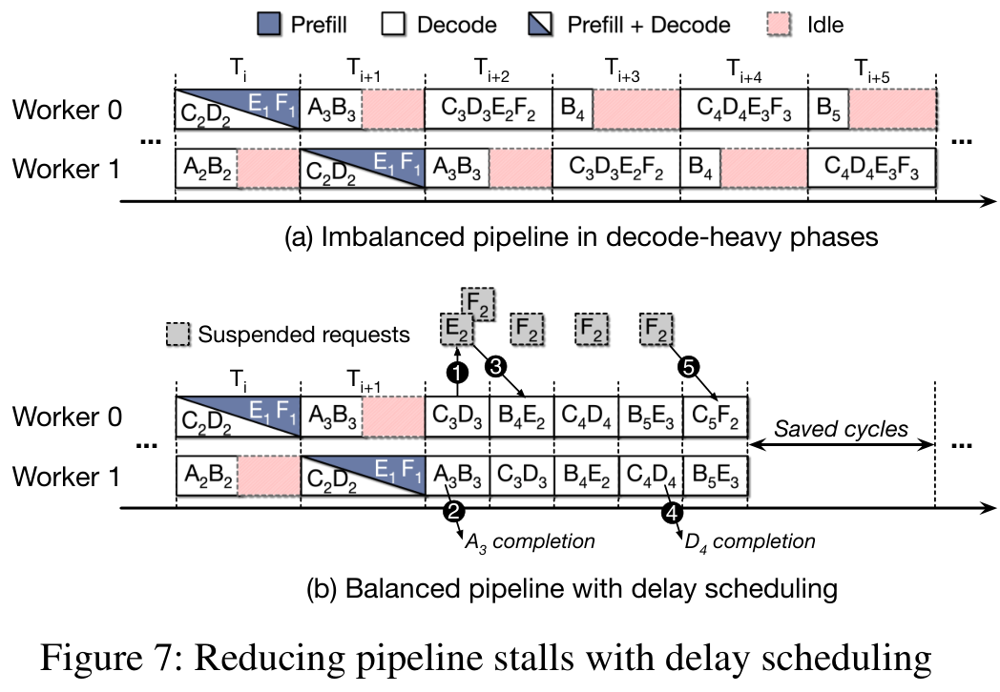
The implementation sits on SGLang 0.4.1, with PyTorch v2.5.1, CUDA 12.4 and FlashInfer underneath. Both baselines and the three techniques were built on top of SGLang: the baseline is pipeline parallelism with chunked prefill, and the techniques are additions to the scheduling path rather than to the model or the kernels. That is the paper's main systems claim — the mechanisms need no new operator, no custom kernel and no retraining — and it is the reason the whole page can talk about "knobs" at all.
Every timing diagram in the paper draws two workers, and §3.1.1 makes the assumption explicit for the illustration ("assuming a two-stage pipeline and a maximum batch size of three"). The evaluation, however, describes only "a server with four NVIDIA A100 (40GB) GPUs" connected via PCIe 4.0; the pipeline degree used for PP, the number of layers per stage and the number of GPUs per TP group are not reported. This matters when reading \(D_p\): the greedy loop's update cadence is defined as one update per \(D_p\) iterations, so \(D_p\) is whatever the deployed stage count is, and the paper's numbers therefore validate the mechanism without pinning down its most structural parameter. It is flagged again in the assessment below rather than papered over here.
Because the paper is a scheduling study rather than a systems-release paper, its disclosure is asymmetric: the control structure is stated precisely enough to re-implement, while the numeric operating point is almost entirely absent. The table below separates the two, because a reader who wants to reproduce the mechanism and a reader who wants to reproduce the results need completely different things from this paper.
| Configuration item | What the paper discloses | What it does not disclose |
|---|---|---|
| Software stack | SGLang 0.4.1; PyTorch v2.5.1; CUDA 12.4; FlashInfer; baselines and techniques all implemented on top of SGLang (§5.1) | Size or location of the scheduler patch; how the PP path was wired into SGLang's iteration loop |
| Candidate chunk set \(C\) | "Set of possible chunk sizes (e.g., {128, 256, …})"; step δ = 128 ("e.g., 128"); 2,048 is the largest chunk the compute capacity of an A100 supports (Algorithm 1, lines 2 and 4; §3.2.1) | The exact membership of \(C\) as deployed, and whether it is derived per model or per GPU |
| Update cadence \(D_p\) | One update per \(D_p\) scheduling iterations, where \(D_p\) is the pipeline depth, because a chunk change only takes effect after a microbatch traverses all stages (Algorithm 1, lines 1 and 10; §4.1.1) | The pipeline degree used in any experiment — §5.1 lists four GPUs but never the stage count |
| KV watermark \(\theta_{mem}\) | Exists, is in [0, 1], is tested as \(KV_{free} < \theta_{mem}\), and on trigger resets the chunk to the smallest candidate larger than the running request count (Algorithm 1, lines 6, 14–15) | Any numeric value, and whether it is a static fraction of the KV pool or load-dependent |
| Slack boundaries α, β, γ | α = "sufficient TTFT slack" boundary, β = "TTFT slack tight" boundary, γ = TPOT-comfortable boundary, all in [0, 1] and all relative to the respective SLO (Algorithm 1, lines 7–8; conditions on lines 17 and 20) | Any numeric value for α, β or γ |
| Predictor inputs | \(KV_{free}\), \(L_{measured}\), \(Q_{waiting}\), \(B_{running}\) are read each iteration; attention features (prefix and context lengths) update the model (Figure 6 ① ②; §4.1.2) | Length of the sliding window used for the request-rate estimate |
| Predictor cost | Full accuracy/cost table: MAPE 3.26%, 0.002875 ms per prediction, 0.643 KB model (Table 1) | The offline profile itself — measured \(T_{offline}\) values, and \(\alpha_0,\alpha_1\) |
| RLS adaptation | Recursive Least Squares with an internal covariance matrix and a forgetting factor that prioritises recent observations (Haykin, Adaptive Filter Theory) | Forgetting factor λ, covariance initialisation, and the update rate |
| Delay-scheduling boundaries | Hardware-efficient batch boundaries given as "e.g., 128, 256, 384"; alignment to the average request count when the overflow is large (§4.2) | The value of the preemption threshold ("a configured threshold") |
| Preemption policy | Victim choice is state-dependent: preempt older requests when TPOT slack is short, newer requests when TPOT slack is ample and the risk is KV exhaustion (§4.2) | Resume ordering and any anti-thrashing rule for repeatedly preempted requests |
| Evaluation platform | 4× NVIDIA A100 40GB on PCIe 4.0; 128-core AMD EPYC 9754 at 2.25 GHz; 768 GB RAM; BF16 models (§5.1) | PP degree, per-stage layer split, NVLink-vs-PCIe sensitivity, multi-node behaviour |
The practical reading is that this is a reproducible mechanism with an unreproducible operating point. The control law fits on a page: four scalars (α, β, γ, \(\theta_{mem}\)), one step size, one cadence inherited from the topology, plus a threshold and a forgetting factor. A reader can rebuild it in an afternoon; what they cannot know is where α and β should sit on their own hardware, because the paper does not report where they sat on this one. The tuning surface is small enough that a sweep is plausible — which is precisely why the omission is worth flagging rather than treating as fatal.
The platform is one node: four NVIDIA A100 40GB GPUs, each attached to the host over PCIe 4.0, a 128-core AMD EPYC 9754 at 2.25 GHz and 768 GB of RAM, with PyTorch v2.5.1, CUDA 12.4 and FlashInfer under SGLang 0.4.1. The models are Qwen2.5-32B and Qwen2.5-14B in BF16. Traffic comes from three real traces — Azure Conversation, ShareGPT and CNN — plus one synthetic derivative, CNN-Reversed, built by swapping CNN's input and output distributions so that prompts are short and generations long. Request arrivals follow a Poisson process, the standard model for interactive user-facing services.
Five configurations are compared. TP is the tensor-parallel baseline, run with the default chunk size of 2,048. PPstatic is pipeline parallelism with a chunk size chosen by an offline search — 512 for AzureConv, CNN and ShareGPT on the 32B model, 256 for CNN-Reversed on 32B, and 1,024 for AzureConv on the 14B model; the paper notes explicitly that the best chunk size is workload-dependent. On top of that sit DCPgreedy, DCPpred and DCPpred+DS. The primary metric is goodput, the highest request rate at which P90 TTFT and P90 TPOT both satisfy their SLOs (2,000 ms / 200 ms); once goodput is comparable the paper compares P90 TTFT, TPOT and end-to-end latency. In the three latency panels only PPstatic is plotted, so the goodput bars are the only place where all five configurations appear together.
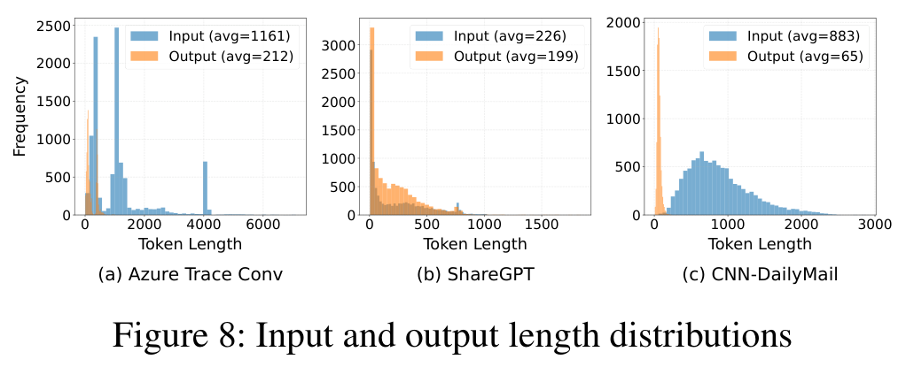
Figure 9 is the core result table rendered as charts: a goodput bar group per workload, then the P90 curves behind it. The goodput bars also expose the static chunk sweep, and that sweep is the most surprising object in the paper. On AzureConv the static chunks read 4.27, 7.07, 8.28, 4.35 and 3.16 req/s for 128, 256, 512, 1,024 and 2,048 tokens — the best static point is 8.28 and the default 2,048 is only 3.16, below TP's 3.48. The chosen chunk size is not a fine-tuning detail; it decides whether PP beats TP at all.
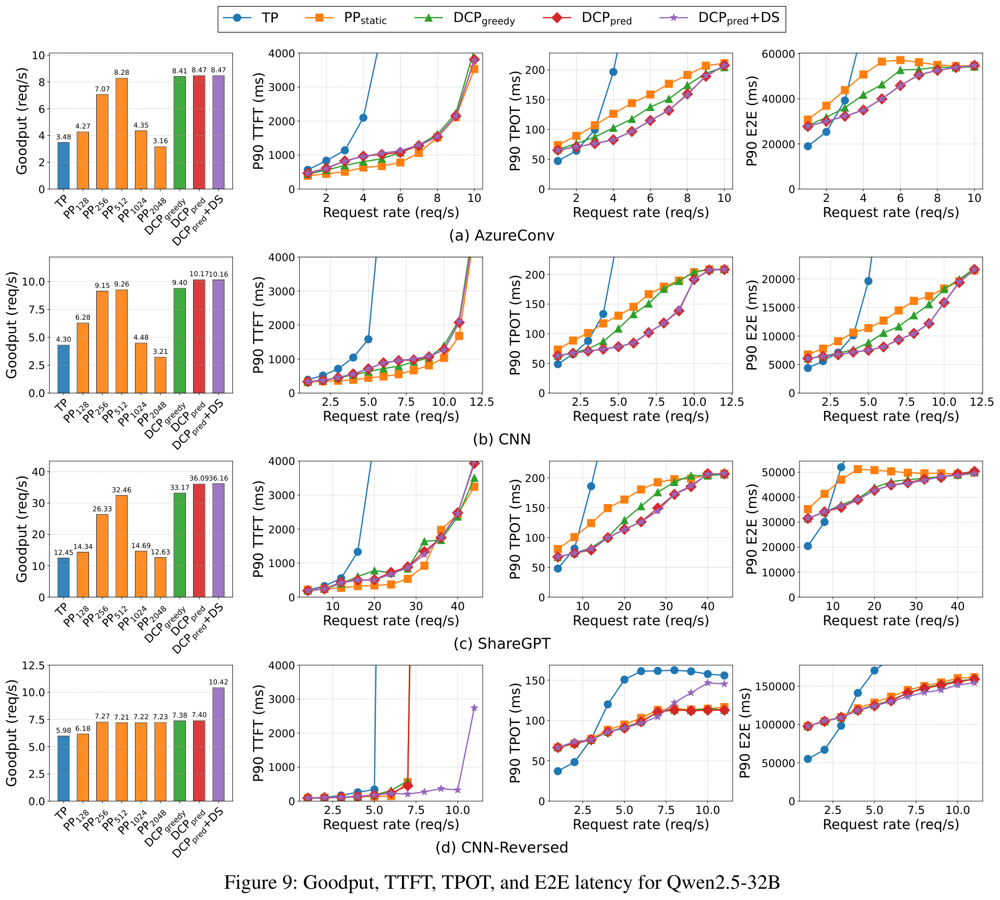
Against the tuned PPstatic baseline the two DCP variants behave as designed: both slightly increase TTFT and leave goodput roughly unchanged, while substantially improving TPOT and E2E by removing bubbles. On AzureConv, DCPgreedy cuts TPOT and E2E by up to 19% and 18%, whereas DCPpred achieves 35% and 31%. The split is explained by reactiveness: the greedy loop is structurally limited in how aggressively it can exploit favourable operating points, so it nearly matches the predictor on goodput but converts less of it into latency. On CNN the same comparison reads 27% / 28% for greedy against 42% / 36% for the predictor, and on ShareGPT the predictor reaches 36% / 24%. The pattern the paper draws from these three workloads is that predictive chunk selection gives more consistent reductions than greedy selection.
A [estimated] reading of the same bars puts the magnitudes in perspective: PPstatic is about 2.4× TP on AzureConv (8.28 / 3.48), 2.2× on CNN (9.26 / 4.30) and 2.6× on ShareGPT (32.46 / 12.45), while DCPpred adds about 2% on AzureConv, 10% on CNN and 11% on ShareGPT over PPstatic. Most of the distance from TP to PP is crossed by choosing a good static chunk at all; the dynamic mechanisms convert the remaining few percent of goodput into a large latency reduction, and that is the honest way to read the paper's headline claim.
| Workload | TP | PP128 | PP256 | PP512 | PP1024 | PP2048 | DCPgreedy | DCPpred | +DS |
|---|---|---|---|---|---|---|---|---|---|
| AzureConv (prefill-heavy) | 3.48 | 4.27 | 7.07 | 8.28 | 4.35 | 3.16 | 8.41 | 8.47 | 8.47 |
| CNN (prefill-heavy) | 4.30 | 6.28 | 9.15 | 9.26 | 4.48 | 3.21 | 9.40 | 10.17 | 10.16 |
| ShareGPT (mixed) | 12.45 | 14.34 | 26.33 | 32.46 | 14.69 | 12.63 | 33.17 | 36.09 | 36.16 |
| CNN-Reversed (decode-heavy) | 5.98 | 6.18 | 7.27 | 7.21 | 7.22 | 7.23 | 7.38 | 7.40 | 10.42 |
Tabulating those bars makes one pattern easier to see than the charts do: on all three prefill-heavy workloads goodput collapses once the chunk exceeds 512, while the decode-heavy CNN-Reversed workload is almost insensitive to the chunk size and only delay scheduling moves it (7.40 → 10.42, i.e. 1.41×). The same table is also why the claim that a tuned static chunk already beats TP has to be read together with the sweep on either side of it: the win is one operating point wide.
Only two workloads are shown for the smaller model, for space: AzureConv as the prefill-heavy representative and CNN-Reversed as the decode-heavy one. The trends carry over, and one detail is informative precisely because it changes — on the 14B model the best static chunk for AzureConv is 1,024, not 512, so the desired chunk size shifts with the model as well as with the workload. DCPgreedy and DCPpred reach the highest goodput and lower TPOT and E2E; relative to PPstatic the greedy and predictive approaches reduce TPOT latency by up to 40% and 50%.
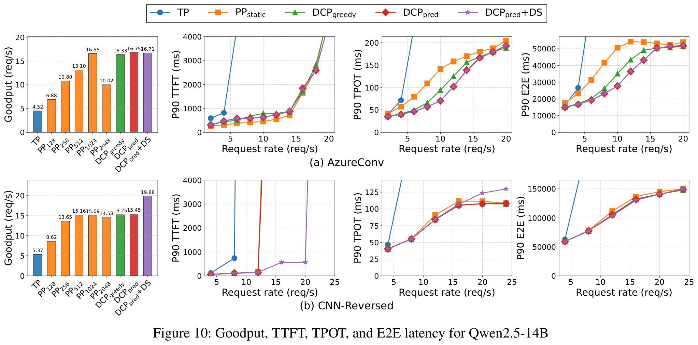
| Workload | TP | PP128 | PP256 | PP512 | PP1024 | PP2048 | DCPgreedy | DCPpred | +DS |
|---|---|---|---|---|---|---|---|---|---|
| AzureConv | 4.52 | 6.88 | 10.80 | 13.10 | 16.55 | 10.02 | 16.33 | 16.75 | 16.71 |
| CNN-Reversed | 5.37 | 8.62 | 13.65 | 15.16 | 15.09 | 14.58 | 15.25 | 15.45 | 19.88 |
Goodput says whether a configuration stays inside budget; the iteration-latency CDF says what it does to individual scheduling rounds. Figure 11 derives the distributions from the runs in Figure 9 at average loads of roughly 4, 5 and 8 requests per second. For AzureConv the 90th-percentile iteration latency falls from 51.68 ms with PPstatic to 29.56 ms with DCPgreedy and further to 21.53 ms with DCPpred; at the 99th percentile the predictor reaches 30.94 ms against 65.34 ms, a 2.11× improvement in the tail.
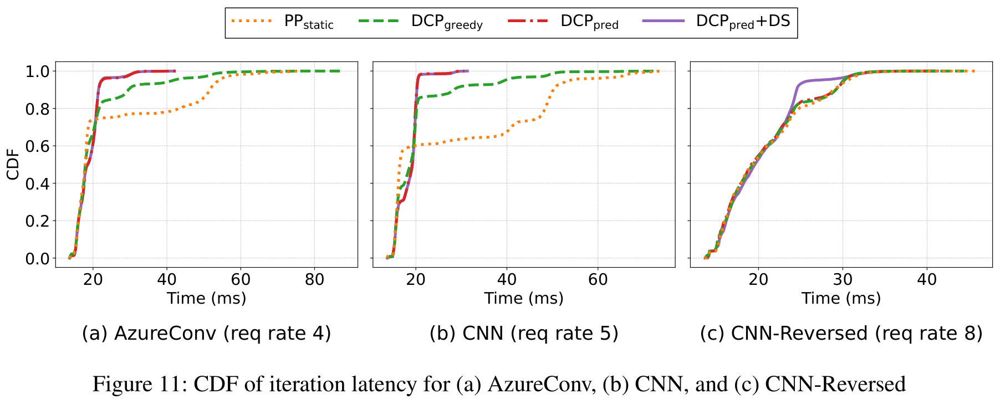
Figure 12 sweeps the SLO budget rather than the load: on the x-axis, an SLO scale of 1.0 means 2,000 ms TTFT and 200 ms TPOT, and lower values tighten both proportionally. The headline is that DCP's advantage over the PP baseline grows as the budget tightens — from 2.7× to 5.4× for the 32B model and from 1.7× to 2.4× for the 14B model as the scale drops from 1.0 to 0.4. At the strictest scale of 0.2 on the 32B model even the smallest possible chunk violates the TPOT constraint, so every PP-based system collapses to zero goodput.
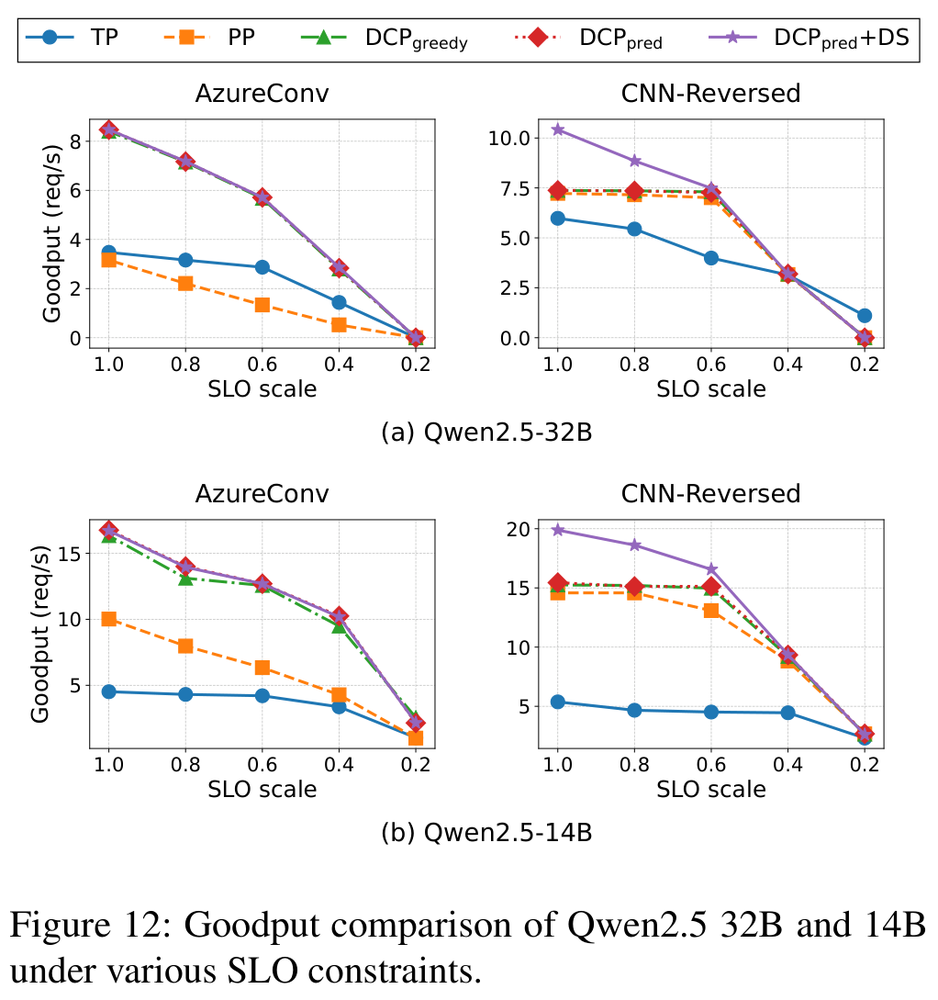
To separate the mechanisms from the traces, the paper builds two synthetic workloads by uniform sampling: prefill-heavy draws input lengths from [512, 1024] and output lengths from [32, 64] tokens, while decode-heavy swaps the two ranges. Both are served at rates chosen to be just where the PP baseline starts violating the SLO — 5 and 14 requests per second respectively — which makes the comparison a test of which mechanism rescues the case.
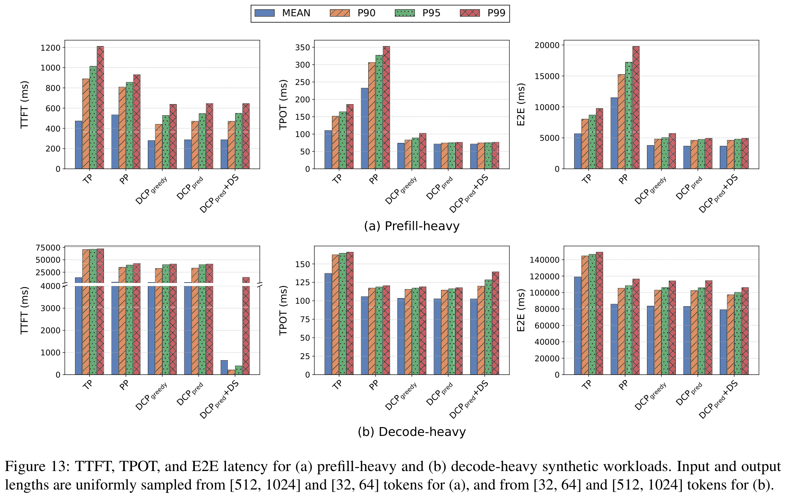
The last experiment replays the first 15 minutes of the Azure Conversation trace, with the arrival rate scaled to 0.9× the original so that PPstatic's SLO attainment lands near 90% — a deliberately hard but not saturated regime. This is the only place in the paper where all configurations are judged by attainment rather than by the goodput definition, and the numbers are the cleanest summary of the whole argument: TP attains 1.9%, PP with the default chunk of 2,048 attains 1.6%, the offline-searched PPstatic attains 92.5%, and the dynamic variants attain 93.5%, 94.5% and 94.6%.
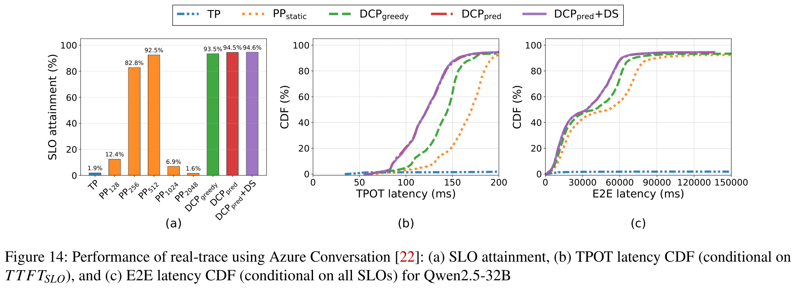
The final analysis asks whether a learned latency model earns its place, and answers it in two directions: how accurate ALP is as components are added, and what it costs against generic ML alternatives. Accuracy is measured as MAPE on the AzureConv workload; cost is reported as prediction time and model size, both of which decide whether the model can run inside the scheduler's critical path.
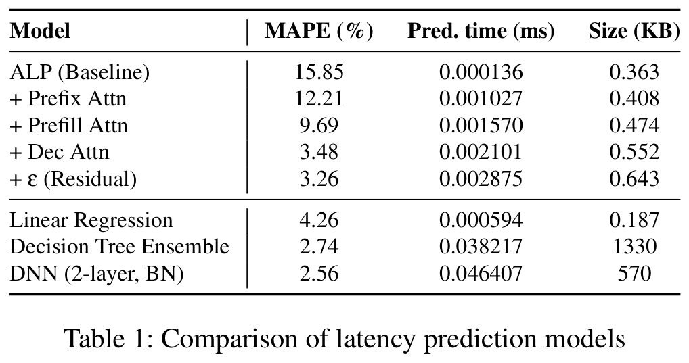
Read as an engineering trade, the table makes a conservative argument: the predictor is roughly 16× cheaper in time and 900× smaller than the DNN for 0.70 points of MAPE [estimated], and it needs no pre-training or feature pipeline. Read as evidence, it also shows the ceiling — no learned model buys more than a few points of MAPE, which is why the paper attributes its latency wins mainly to the scheduling decision rather than to prediction quality.
The paper's related-work section reads as a map of three separate research lines that have never quite met: the batching/prefill line, the disaggregation line and the model-parallelism line. Its own position is the intersection — it takes a technique from the first (chunked prefill), refuses the second (disaggregation), and applies both to the third (pipeline parallelism), which it argues has been left behind by serving frameworks.
ORCA was the early and influential system that introduced iteration-level scheduling and selective batching to keep GPU cores busy (Yu et al., 2022), and the paper's whole analysis inherits its model of an iteration. Chunked prefill then split long prompts into smaller pieces to relieve TPOT under prefill-heavy traffic (Agrawal et al., 2024; Holmes et al., 2024), and the idea has been absorbed into production stacks: vLLM (Kwon et al., 2023), SGLang (Zheng et al., 2024), TensorRT-LLM (Vaidya et al., 2023) and Dynamo (NVIDIA AI Dynamo Team, 2024). Alongside scheduling, KV-cache management across GPU, CPU and storage has its own literature aimed at avoiding recomputation (Gao et al., 2024; Yu et al., 2025; Yao et al., 2025; Jeong and Ahn, 2025). The paper uses all of this as substrate and changes one thing inside it: the chunk size stops being a constant.
The most direct alternative to this paper's approach is to separate the phases physically rather than schedule around their interference — isolating prefill and decode on different GPUs (Patel et al., 2024; Qin et al., 2024; Zhong et al., 2024). The paper concedes that this reduces interference, then names the price: model weight duplication and high-bandwidth requirements for KV-cache transfer. Its counter-position is that unified serving with chunked prefill remains the practical choice once those overheads are counted, but that static chunking leaves non-negligible bubbles — so the overheads of disaggregation and the bubbles of unified serving are the two horns of the same dilemma, and this paper attacks the second horn with scheduling rather than the first with hardware.
Within multi-GPU serving, prior work has examined tensor parallelism (Shazeer et al., 2018; Shoeybi et al., 2020), pipeline parallelism (Huang et al., 2019; Narayanan et al., 2019) and expert parallelism in MoE models (Shazeer et al., 2017; Lepikhin et al., 2020) to maximise hardware efficiency. AlpaServe extended this with statistical multiplexing, allocating GPU resources dynamically by workload characteristics and improving throughput in multi-tenant settings (Li et al., 2023), while ExeGPT refined resource allocation with constraint-aware scheduling that jointly optimises latency, throughput and GPU utilisation (Oh et al., 2024). The distinction that matters here is one of granularity and of time scale: those systems decide how many GPUs a model or a tenant gets, whereas this paper keeps the topology fixed and re-decides, every iteration, how much work each stage receives.
The closest prior work is recent dynamic chunking, which also adapts the chunk size at runtime but prioritised SLO compliance (Goel et al., 2025) — and, in the paper's characterisation, overlooked the structural constraints of pipeline parallelism, leaving pipeline bubbles unresolved. That sentence is the paper's actual novelty claim, and it is worth stating precisely: not "dynamic chunking is new", nor "chunked prefill is new", but that the chunk size is an actuator for stage-level balance, and that a PP deployment additionally needs a decode-side rebalancing knob which is meaningless outside PP because tensor parallelism does not decompose a batch into microbatches at all.
The paper closes by restating the arc: pipeline parallelism's inefficiencies in LLM serving come from imbalance, greedy and predictive chunk-size adjustment fix the prefill-heavy half of it, dynamic rebalancing fixes the decode-heavy half, and evaluated on Qwen2.5-32B and 14B over several real workloads the combination outperforms tensor parallelism in goodput for single-node multi-GPU environments. It is a narrow claim, deliberately so — goodput, one node, PCIe — and the paper does not extend it to multi-node, NVLink or phase-disaggregated deployments.
| Component | Upstream, as cited in the paper | What this paper changes |
|---|---|---|
| Iteration-level scheduling | ORCA (Yu et al., 2022); vLLM (Kwon et al., 2023) | Kept intact — requests still join and leave per iteration; the paper changes only what each iteration is allowed to contain. |
| Chunked prefill | Sarathi-Serve (Agrawal et al., 2024); DeepSpeed-FastGen (Holmes et al., 2024) | The chunk size becomes a per-iteration control variable bounded by TTFTSLO and TPOTSLO, instead of a fixed configuration. |
| Default chunk size in production frameworks | 2,048 as the default chunk size, which the paper also uses for the TP baseline (Agrawal et al., 2024; vLLM Team, 2025) | Replaced by a candidate search over {128…2048}: greedy feedback (Algorithm 1) or model-priced bounds (Figure 6). |
| Iteration-latency model | Offline profiling of the linear layers — this paper's own ablation baseline (Table 1, "ALP (Baseline)") | Adds three online attention terms plus a residual ε, taking MAPE from 15.85% to 3.26% without an offline training phase. |
| Adaptive filtering | Recursive Least Squares (Haykin, Adaptive Filter Theory) | Applied to per-iteration latency calibration; justified by feature-scale disparity (\(L_{pre}^{2}\) vs \(L_{dec}\)) and by non-stationarity that a forgetting factor handles. |
| Microbatch composition | Static assignment for a request's lifetime (Kwon et al., 2023; Zheng et al., 2024) | Delay scheduling: suspend and resume requests across stages, aligned to hardware-efficient batch boundaries, with state-dependent victim selection. |
| Phase-disaggregated serving | Splitwise (Patel et al., 2024); Mooncake (Qin et al., 2024); DistServe (Zhong et al., 2024) | Not adopted: keeps serving unified to avoid weight duplication and KV-transfer bandwidth, and removes the interference with scheduling instead. |
| Pipeline parallelism itself | GPipe (Huang et al., 2019); PipeDream (Narayanan et al., 2019) | Carried from training into online inference, where microbatches cannot be shaped in advance — the source of all three bubbles. |
| Dynamic chunking for SLO compliance | Niyama (Goel et al., 2025) | Adds the PP structural constraint that earlier dynamic chunking ignored, plus the decode-side rebalancing such work cannot express. |
Citations follow the paper's own inline attributions; this page did not re-verify them against the paper's reference list.
Every abbreviation used on this page, in the sense the paper uses it. Abbreviations in the prose carry a dotted underline — hover to see the expansion without leaving the paragraph.
| Term | Expansion | Meaning in this paper |
|---|---|---|
| TP | Tensor Parallelism | Sharding intra-layer tensors across GPUs and combining partial results with all-reduce; the default for single-node serving, cheap on NVLink and expensive on PCIe. |
| PP | Pipeline Parallelism | Partitioning the model by layer depth into stages, one per GPU, with microbatches walking the stages in order; the parallelism this paper revisits. |
| DCP | Dynamic Chunked Prefill | The paper's umbrella for choosing the chunk size per scheduling iteration; two variants, DCPgreedy and DCPpred. |
| DS | Delay Scheduling | The paper's decode-side rebalancing: temporarily suspend requests so microbatches across stages even out, then resume them. |
| ALP | Adaptive Latency Prediction | The paper's latency model: an offline linear-layer fit plus online attention terms calibrated by RLS. |
| TTFT | Time To First Token | Prefill-path latency from request arrival to the first output token; budgeted at 2,000 ms in this paper. |
| TPOT | Time Per Output Token | Inter-token latency during decode; budgeted at 200 ms. The paper also uses \(TTFT_{SLO}\) and \(TPOT_{SLO}\) for the two budgets. |
| E2E | End-to-End latency | Total request latency; the paper reports its P90 and P99 alongside TTFT and TPOT. |
| SLO | Service Level Objective | The latency target a request must meet. Here always a pair: a TTFT budget and a TPOT budget. |
| Goodput | — | Defined in §5.1 as the highest request rate at which both P90 TTFT and P90 TPOT satisfy their SLOs; the paper's primary metric. |
| P90 / P99 | 90th / 99th percentile | Tail statistics of a latency distribution over requests or over scheduling iterations, depending on the figure. |
| KV cache | Key-Value cache | The stored attention keys and values that let decode reuse prior computation; its free fraction (\(KV_{free}\)) is one of the greedy scheduler's inputs. |
| Chunked prefill | — | Splitting a long prompt's prefill into fixed-size chunks spread over iterations (Sarathi-Serve, Agrawal et al., 2024); the substrate both DCP mechanisms vary. |
| Microbatch | — | A smaller split of an iteration's batch that is handed to one pipeline stage; PP's unit of work traversal, and DS's unit of rebalancing. |
| Pipeline bubble | — | Idle time on a stage while its peers work; in this paper classified as P-P, P-D or D-D imbalance. |
| RLS | Recursive Least Squares | The adaptive filter used to refit ALP's attention coefficients online (Haykin, Adaptive Filter Theory). |
| MAPE | Mean Absolute Percentage Error | The predictor accuracy metric in Table 1; ALP reaches 3.26%. |
| MoE | Mixture-of-Experts | Sparse expert routing; mentioned only in the related work, as a parallelism axis this paper does not combine with. |
Variant labels follow the paper's figures: PPstatic is PP with an offline-searched fixed chunk; DCPpred+DS is the predictive chunk schedule combined with delay scheduling.